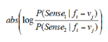

Jigsaw Puzzle Solver Using Computer Vision (2019)
In this project, we were provided with 198 images of puzzle pieces. Our goal is to identify the type of puzzle piece it is by finding the corners, and whether there is a puzzle piece in the image or not, and drawing the bounding box around the puzzle piece. Using these information, we can then attempt to solve the puzzle. The code was written in Matlab.
Methods Used: Image Segmentation, Morphology, Harris Corner Detection
Teammates: Aaron Cote
Link to Paper: Solve Jigsaw Puzzles Using Computer Vision
GPS Classifier (2018)
We were given a set of GPS data, and were asked to predict when a car stopped due to a stop sign or traffic light, and when a car turned left or right. Additionally, the GPS data was made of many paths, to eliminate the clutters, K-Means was used to agglomerate paths and remove issues related to dilution of precision.
Methods Used: DBScan, K-Means, Decision Tree
Teammates: Joe Golden, Niccolo Dehicchio
Classifier Results


Link to Paper: Making Predictions with Vehicle's GPS Data
Link to Github: GPS Predictions Github
Using Word Embedding to automate Recipe Replacement (2018)
In this project, we explore the possibility of creating a model that can identify replacement for an ingredient. For instance, if the query was butter, it should discover that margarine is similar to butter, so that is 1 potential replacement. The applications for this are numerous: along with aiding individuals with allergies and dietary restrictions, this can also help cooks understand how to use ingredients they already have. The idea is to transform ingredients into embeddings. With ingredients represented as embeddings, cosine similarity can be used to find the closest replacement.


Paper Available Below: Using Word Embedding to Automate Recipe Replacement Research Paper
Link to Github Research Github
Word Sense Disambiguation using Decision List
The program determines the sense of a word based on context using Decision List proposed by David Yarowsky. The implementation was based on this paper Decision Lists for Lexical Ambiguity Resolution. In this paper, the author used WSD method to differentiate between two different types of accent. We apply this same method to predict the sense of words. (BASS vs. SAKE)
Currently, the implementation is only capable of determining two word sense (BASS and SAKE). The dataset used for training this decision list is obtained from R.Sproat textbook.
How does Decision List work ?We create multiple collocation types based on data. Collocation types used are the window size, the Part of Speech tag of a word, and single words. Using these collocations, multiple if statements are created. The order in which the if statement is traversed is based on the Log-Likelihood of the Decision List. When given a new sentence that contains either a "Bass" or "Sake", it traverses through the if-statements in the sorted order, and returns the result of the if statement. If no match is found, it returns the majority rule. For the word "Bass", there were more sentences that had the musical meaning in the training data. Therefore, if no "if-statements" match, it would default to have the "musical" sense.
Log Likelihood Equation Here is an example. If we were given the sentence, "Stephan Weidner, the composer and bass player for Boehse Onkelz, a", a window size of 2 collocation will generate a list like this; [2_window_composer, 2_window_and, 2_window_player, 2_window_for]. A collocation using Part of Speech tag will replace the respective word with the part of speech of the word based on its context. For example, it may generate a rule like this; -2_tag_noun because composer is a noun, and composer is 2 words left of "bass". A collocation using single words will only consider the word that is n words away from bass. For example, if we are creating a collocation using 2 words to the left, it will only consider composer. Hence, it will generate a rule like this; -2_word_composer.
Summary of Collocations considered
- Word immediately to the right (+1 W)
- Word immediately to the left (-1 W)
- Word found in (+/- 5) word window (+/)
- Part of Speech Tag of word to the right (Tag + 1 W)
- Part of Speech Tag of word to the left (Tag -1 W)
- Removed punctuations
- I noticed that there were some xml tags such as
- I also removed the dashes in compound words such as 7-pound and concatenated these 2 words together. Resulting in 7pound.
Word Sense Disambiguation Results
Accuracy, Baseline, and Confusion Matrix
This table shows the accuracy when predicting on testing data, and it also shows the baseline accuracy for the two words
Link to Github: WSD Github
Sentiment Analysis, Genre Prediction, Topic Prediction on Unbalanced Data
The data set contains sentences extracted from reviews about products, movies, and resources. The sources of review came from IMDB, Amazon, and Yelp. We were ask to complete 3 Tasks.
Teammates: Oliver Olonzo, Josh Bickings
- Task 1: Predict the polarity of the review (Positive, Negative, Neutral).
- Task 2: Predict the event classes/types (i.e Attending_event, Communication_issue, Going_to_places, Legal_issue, None, Money_issue, Outdoor_activity, Personal_care, (Fear_of_Physical_pain)
- Task 3: Identify the source of genre of sentence (2 genre available: genre A or genre B)
Predicting language of text (Dutch/English) using Decision Tree and Adaboost (2018)
The purpose of this program is to determine whether the sentence is Dutch of English using Decision Tree and Adaboost.
Features Summary:- Does it contain English/Dutch stop words?
- Most common letter combinations in English/Dutch
- Does it contain an English/Dutch suffix?
- For the training samples, there are 1610, 15 word , sentences scraped through various sources
- 713 of the training sample is Dutch, and 897 of them were English sentences
- For the testing samples, there were 404, 15 word sentences
- 179 of them were Dutch sentences, and 255 were English sentences

Link to Paper: Language Prediction using Decision Tree and Adaboost
Link to Github: Language Prediction Github
Finding shortest route for Marathon Runners using A* (2018)
The purpose of this program is to find the shortest route from a start point to a final point defined by the user. However, the runner must pass certain points along the path in order to get to its final destination. In addition, the elevation, and terrain type must be considered when finding the shortest path. The terrain and its ability to impede a runner may change depending on the season. Details about how the heuristic for the A* is outlined in the "Link to paper" section.

Figures: The path found is shown in red, and the blue points along the red paths are representative of the "must pass" points.
Link to Paper: Shortest Path for Marathon Runner PaperImplementation of Fundamental Data Mining Concepts from Scratch (2018)
Concepts implemented include:
- Agglomeration (Agglomerated locations on a map)
- Otsu's Method (Used method to find best car speed when considering whether someone is speeding or not)
- PCA (Projected 120 dimension data onto 3 dimension)
- KNN (Used KNN to classify different types of shoppers at a grocery store)
- K-Means (performed k-means on carefully constructed data)
K-Means Result
K-Means Github Code
Agglomeration Result on random map locations
Agglomeration Github Code
PCA Visual Results
PCA Github CodeFirst, we agglomerated the data points. Then, we used PCA to project 120 Dimensional data to 3 Dimension. After projecting it, we were able to visualise it as a 3D plot

Grocery Detection using Google's Object Detection API
Next up: Implementing it from scratch
Detect an Orange from Jennifer on Vimeo.